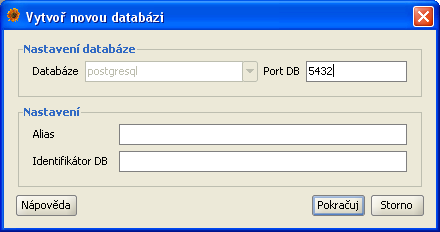
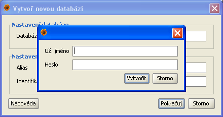

Vytváření nové databáze
Aby jste mohli po instalaci začat pracovat s nálezovými záznamy je potřeba nejprve vytvořit databázi do které se data budou ukládat (v případě, že
se připojujete k lokální databázi). V případě připojení ke vzdálenému serveru není potřeba databázi vytvářet. Plantlore umožňuje taky práci s více
databázemi na jednom serveru proto je nutné mít možnost vytvořit novou databázi. Důvodem pro více databází může být například oddělení dat různých
projektů či institucí. Počet databází a jejich využití je na vás.
Plantlore poskytuje jednoduché rozhraní pro vytváření nové databáze, které je přístupné z hlavního menu aplikace Data|Vytvořit novou databázi.

Důležité upozornění: Z bezpečnostních důvodů je možné vytvářet novou databázi jenom přes lokální připojení k databázi. Taky se ujistěte, že
není žádný jiný program právě nepoužívá databázový systém PostgreSQL.
V tomto dialogu musíte zadat základní informace o databázovém systému ve kterém chcete databázi vytvořit a o nové databázi.
- Databáze - Typ databázového systému. V současné verzi je podporován pouze systém PostgreSQL
- Port DB - Port na kterém databázový systém běží. V tomto poli je předvyplněný výchozí port pro vybraný databázový systém
- Alias - Popis nové databáze který se použije při přihlašování (tato informace se po vytvoření databáze automaticky přidá do přihlašovacího dialogu kde si volíte databázi ke které se chcete připojit)
- Identifikátor DB - jméno samotné databáze. Ujistěte se, že databáze s tímto jménem ještě neexistuje. V názvu databáze je možné použít pouze alfanumerické znaky (A-Z, a-z, 0-9)
Po stisku tlačítka Pokračuj se zobrazí dialog pro zadání přihlašovacího jména a hesla které jsou potřeba pro přihlášení do databázového systému.

Vytváření nové databáze po instalaci Plantlore
V případě, že vytváříte databázi po nové instalaci Plantlore, zadejte jméno a heslo databázového uživatele které jste si zvolili v instalátoru. Plantlore automaticky umožní tomuto uživateli administrátorský přístup k nové databázi a následné
vytváření nových uživatelů.
Vytváření nové databáze v už fungujícím systému
Pokud vytváříte novou databázi v systému kde už existují jiné databáze musíte pořád používat původního databázového, kterého jste použili pro vytvoření originální databáze.
Po úspěšném vytvoření databáze se zobrazí správa o úspěšném dokončení operace a můžete se přihlásit k nově vytvořené databázi.